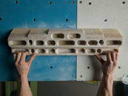
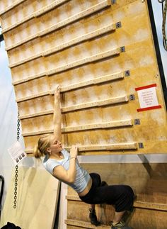
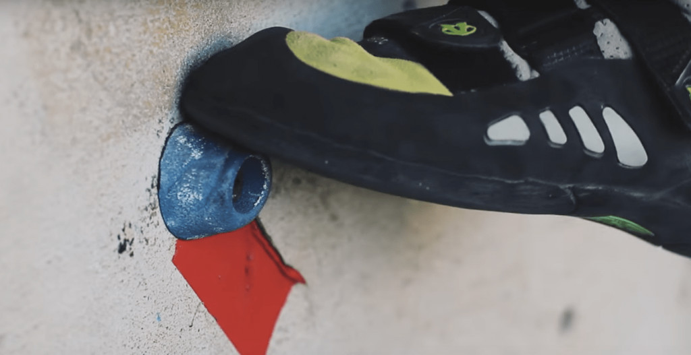
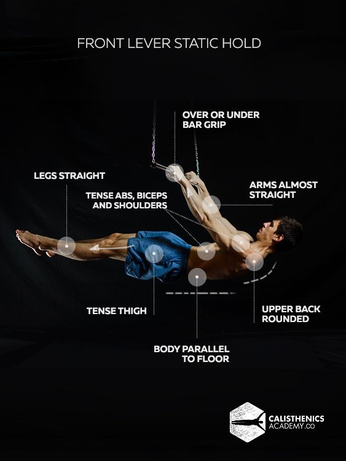

Repeaters consist of quick cycles of hanging on a hangboard and resting. The most common protocol is the 7/3, which consist of 7 seconds on the hangboard and 3 seconds rest, repeated for 7 sets. This exercise can combine various finger positions and is great for power endurance and finger strength.
Campusing is many people's go-to pullup exercise. In some gyms, there is a custom campus board, which allows measurable campus exercises. Some include ladders, which simply involves alternating your hands up the board with even spacing. For example, 2-4-6-8 is a ladder which has each hand reach 2 bars above the other until topping the board. Without a board, you can instead campus on a nice route with good holds.
Silent feet is typically a warm up exercise where the climber focuses on precise footwork and making sure their feet are "silent" while climbing. That is, every step is calculated and doesn't cause any noise. This is great for precision and technique, especially for slab climbs.
Front levers are advanced core exercises performed on a bar where the person holds themselves horizontally on the bar isometrically. If this is too hard, a good alternative is a tuck lever, which involves tucked legs to chest, instead of the standard straight body on a normal front lever. Front levers are great core exercises, especially for overhang, where the route typically involves strong core tension.
